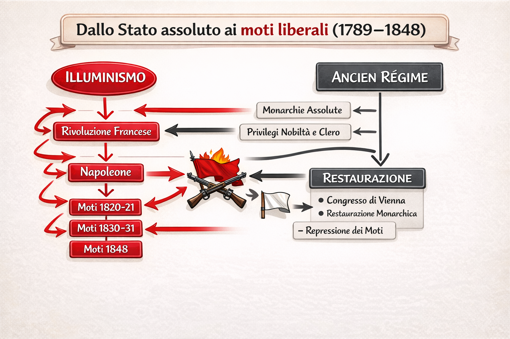

Home
Lezioni organizzate per temi + schemi. Basate sul file del corso.
Restaurazione
Liberalismo
Nazionalismo
1820–21
1830–31
Come usare questa web app
Questa raccolta organizza le lezioni in temi. Ogni tema contiene: schema + testo. L’obiettivo è capire il quadro generale e poi studiare per blocchi.
Schema generale (timeline)
Idea chiave
Restaurazione = tentativo di tornare all’ordine pre-rivoluzionario. Moti = risposta liberale/nazionale (spesso clandestina) contro governi conservatori.
Nel documento di partenza trovi anche l’analisi delle ideologie (liberali, democratici, conservatori) che spiegano perché i moti esplodono.